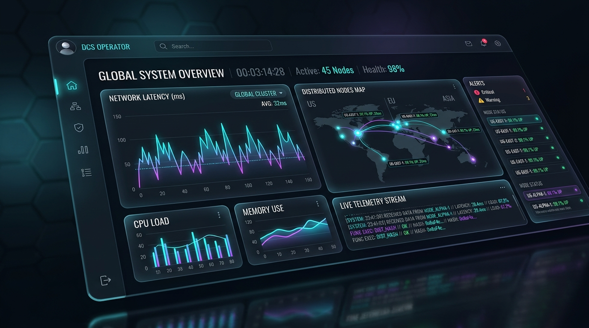

Distributed Systems
Cloud Infrastructure & Observability
CloudPulse: Real-Time Cluster Telemetry Engine
A high-frequency observability platform monitoring global multi-region clusters. Features real-time network latency heatmaps, CPU node saturation alerts, and automated traffic re-routing across 45 active nodes.
120k/sec
Metrics Ingested
18ms
Telemetry P95
99.99%
System SLA